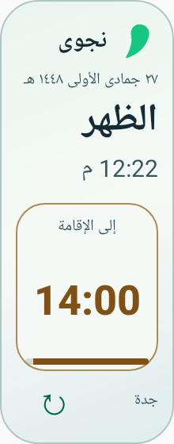
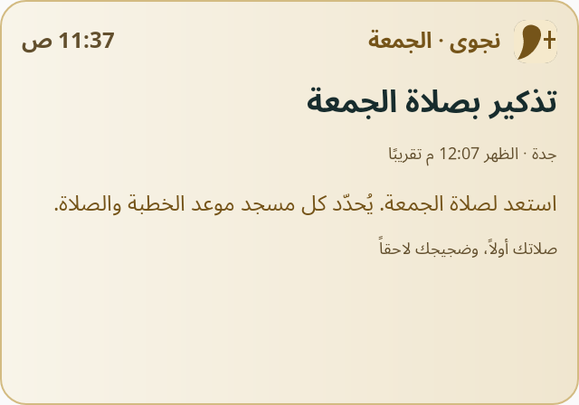

مواقيت محلية
دليل لأكثر من 226 ألف مكان مأهول في 22 دولة عربية. ابحث باسم المدينة، واختر طريقة الحساب، أو أدخل موقعًا يدويًا.
أندرويد · الإصدار 1.1.0
تابع مواقيت الصلاة، واسمع الأذان بالنغمة التي تختارها. يعرض نجوى المتبقي على الإقامة ويضبط صمت الهاتف للمدة التي تحددها.
Android 8.0 فأحدث · يعمل دون إنترنت · ملف تثبيت موقّع
المزايا
دليل لأكثر من 226 ألف مكان مأهول في 22 دولة عربية. ابحث باسم المدينة، واختر طريقة الحساب، أو أدخل موقعًا يدويًا.
اضبط مدة الإقامة لكل صلاة واختر ملف أذان من هاتفك. تذكير الجمعة اختياري ويُحسب نسبةً إلى وقت الظهر في مدينتك. راجع مسجدك لموعد الخطبة.
يبدأ بعد 20 ثانية من وقت الأذان للصلوات التي تختارها، ثم يستعيد وضع الرنين السابق. فعّل المنبّهات الدقيقة وإذن التحكم في الرنين عند الإعداد.
معرض التطبيق


دليل التثبيت
خطوات قصيرة تضبط بها المواقيت والتنبيهات على ما يناسبك.
حمّل ملف نجوى لأندرويد، ثم ثبّته. إذا طلب الهاتف السماح بالتثبيت من مصدر التنزيل، وافق من إعدادات Android.
اختر مدينتك وأكّد المنطقة الزمنية، ثم راجع طريقة الحساب وفق التقويم المعتمد لديك.
فعّل تنبيهات الصلاة بإتاحة الإشعارات والمنبّهات الدقيقة. إذا رغبت في الصمت التلقائي، يمنحك الإعداد خطوة منفصلة للتحكم في الرنين.
اضغط مطولًا على الشاشة الرئيسية، واختر ويدجت نجوى بالحجم المناسب لعرض الصلاة القادمة والوقت المتبقي.
شفرة نجوى لأندرويد متاحة للجميع للاطلاع والتعديل وإعادة التوزيع وفق ترخيص Apache 2.0. يمكنك اقتراح تعديل أو الإبلاغ عن مشكلة عبر GitHub.
تُحسب المواقيت وتُحفظ التفضيلات على جهازك. بيانات الأماكن من GeoNames.